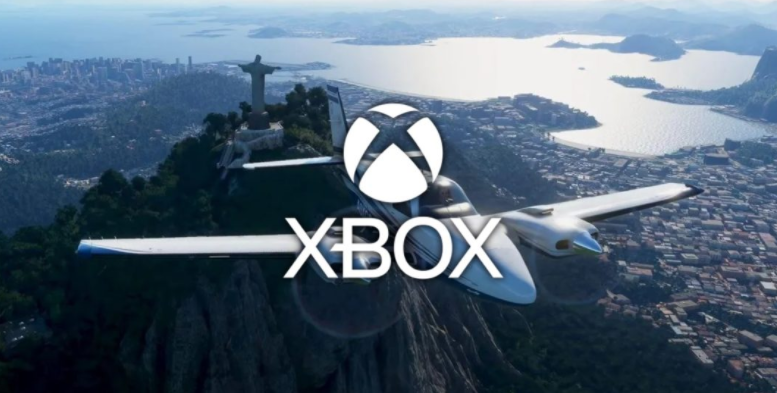

O primeiro Xbox chegou em 2001 para competir com o PSOne, que já estava no mercado desde 1995, e o recém chegado PlayStation 2, lançado no ano 2000.
Além da Sony, a Microsoft também estava de olho no mercado conquistado pela Nintendo e seu Gamecube.
O primeiro Xbox chegou em 2001 para competir com o PSOne, que já estava no mercado desde 1995, e o recém chegado PlayStation 2, lançado no ano 2000. Além da Sony, a Microsoft também estava de olho no mercado conquistado pela Nintendo e seu Gamecube.
Desde seu surgimento, ainda na era dos CDs, até os poderosos Series X e S, o Xbox se firmou como umas das centrais de entretenimento mais importantes da indústria, agregando à marca serviços de sucesso, como o Xbox Game Pass, e dezenas de estúdios.
Antes da chegada do primeiro Xbox, em novembro de 2001, a Microsoft já tinha seus olhos voltados para games publicando, inclusive, alguns títulos para PC, como Flight Simulator e Age of Empires.
No entanto, a empresa percebeu que se quisesse realmente ser bem sucedida nesse mercado alguns upgrades seriam necessários. A Sony já estava cultivando uma boa popularidade com o PlayStation e já começava a trabalhar no PS2.
Com a concorrência crescendo e os videogames se tornando uma força real no mercado, a Microsoft decidiu que também queria uma fatia desse bolo. E assim surgiu o primeiro Xbox, com 64 MB de RAM e 8 GB de armazenamento.
Curiosidade: o nome XBox se originou a partir de DirectX Box e o aparelho havia sido pensado, no início do seu desenvolvimento (lá em 1998), para funcionar mais ou menos como um PC rodando Windows 2000 – o que poderia facilitar a vida dos criadores de conteúdo, que já estavam familiarizados com o sistema.

O primeiro Xbox (Imagem: Divulgação/Microsoft)
Três anos mais tarde, o próprio Bill Gates apresentou o console ao mundo ao lado de ninguém menos que o ator Dwayne Johnson, o “The Rock”. O primeiro Xbox vendeu mais de 1 milhão de aparelhos nas primeiras três semanas após o lançamento.
Muitos desenvolvedores na época concordavam que o Xbox era mais poderoso que os concorrentes GameCube e PS2, mas poucos estúdios fora da Microsoft se aventuraram em explorar o real potencial do aparelho.
Em seu tempo de vida, o primeiro Xbox vendeu mais de 24 milhões de unidades no mundo. O resultado fortaleceu a marca, aos olhos do consumidor, e colocou o videogame em segundo lugar naquela geração, superando a Nintendo e seu GameCube (que vendeu 21,7 milhões consoles) e também do Sega Dreamcast (que vendeu apenas 9,1 milhões).
Mas as vendas do Xbox ficaram bem atrás das do PlayStation 2, que vendeu mais de 155 milhões de aparelhos e ainda detém o título de console mais vendido da história.
O videogame da Microsoft sofreu um bocado para cair nas graças do mercado japonês e estima-se que vendeu em torno de meio milhão de unidades por lá. Mas ao contrário da concorrência, o Xbox se tornou o paraíso dos jogos ocidentais, especialmente para os gêneros de ação e tiro em primeira pessoa.

O “Duke”, primeiro controle do Xbox (Imagem: Divulgação/Microsoft)
O Xbox Controller, também conhecido na época como “Duke”, tinha um design bem robusto e não era lá muito confortável de usar por longas horas. Felizmente, não demorou muito para ele ser substituído por uma versão leve, o “Controller S” que serviu de inspiração para os controles seguintes.
O Xbox foi o primeiro console a dar suporte a uma porta Ethernet de banda larga, o que abriu caminho para a estreia (em 2002) da Xbox Live, um serviço de assinatura para acessar jogos online entre outros recursos. A Xbox Live ganhou popularidade com Halo 2 e atingiu o auge, naquela geração, com cerca de 20 milhões de usuários.
O primeiro game da série Halo, lançado em novembro de 2001, foi uma grande e super bem-vinda surpresa para o Xbox. O jogo se tornou um hit entre os amantes de jogos de tiro e colocou os holofotes para o console da Microsoft. A empresa havia comprado a desenvolvedora Bungie, para lançar este jogo exclusivo, e o investimento valeu a pena.
Outros jogos marcantes do primeiro Xbox foram: Fable, Forza Motorsport, Ninja Gaiden, Star Wars: Knights of the Old Republic, Tom Clancy’s Splinter Cell, Burnout 3: Takedown e mais.
A segunda geração de consoles da Microsoft chegou em novembro de 2005 com o Xbox 360, quase 1 ano antes do lançamento dos concorrentes PlayStation 3 e Nintendo Wii. O console saiu em dois modelos: o Xbox 360 Pro, com 20 GB de HD, e uma versão mais barata, o Xbox 360 Core, com apenas 4 GB de memória interna flash. Era possível, no entanto, comprar um HD em separado para usar no modelo Core.

Xbox 360 e Kinect (Imagem: Divulgação/Microsoft)
O design do 360 é bem mais suave e a cor branca foi adotada como padrão para ambos os modelos iniciais. E por falar em versões do Xbox 360, a Microsoft lançou também outras edições do seu console, como: Xbox 360 Elite (em 2007), com 120 GB de HD e na cor preta; o modelo Core foi substituído pelo Arcade. Em 2010, chegou o Xbox 360 S mais fino e com adaptador wi-fi e, por último, o Xbox 360 E, em 2013.
A evolução do controle do 360, em relação ao Duke do primeiro Xbox, é clara e muito bem-vinda. Um pouco menor que o Controller S, a estrutura de botões quase se manteve a mesma, mas no novo modelo, o número de face buttons caiu de seis para 4 – os conhecidos A, X, Y e B.
Dois novos bumpers também foram adicionados, além de um botão guia no centro – que permitia ligar o console mais rapidamente. Havia modelos com e sem fio do controle e, especialmente, os com fios ficaram bem populares para jogar no PC por conta da sua conexão USB.
A família Xbox 360 vendeu mais de 86 milhões de unidades no mundo e é, até o momento, o console mais vendido da Microsoft.
De uma forma geral, os desenvolvedores consideravam “mais fácil” programar para o 360 do que para o PS3, por exemplo, por conta do próprio processador usado pelo console da Sony. Consequentemente, jogos multiplataforma costumavam rodar melhor no Xbox 360.
O Xbox 360 tornou-se um console muito popular e boa parte de seu sucesso também deveu-se ao recurso de retrocompatibilidade, que permita jogar alguns games do primeiro console. O aparelho também dava suporte a streaming, como Netflix, CDs e DVDs.

Halo 4 (Imagem: Divulgação/Bungie)
Mas como nem tudo são flores, uma das grandes marcas da segunda geração de consoles da Microsoft não é nada positiva. Quem teve um 360, na época, certamente temeu as infâmes “3 luzes vermelhas” ou o “anel vermelho da morte”. Resumidamente, quando três LEDs apareciam na cor vermelha era sinal de superaquecimento.
O problema, quando acontecia, era tão severo que acabava destruindo o sistema do aparelho. A Microsoft, inclusive, gastou bilhões de dólares na época para estender a garantia do videogame em 3 anos.
Em novembro de 2010 foi lançado o Kinect para o Xbox 360. O controle de movimentos com câmera integrada trazia suporte a comando de voz e permitia que os jogadores usassem o próprio corpo como controle para alguns jogos, que davam suporte ao recurso.
O Kinect vendeu em torno de 8 milhões de unidades em 60 dias após seu lançamento. Até o fim da vida útil do Xbox 360, a Microsoft vendeu mais de 24 milhões da primeira geração do seu controlador de movimentos.
Gears of War (1, 2 e 3), Halo 3, Halo: Reach, Halo 4, BioShock, Call of Duty: Modern Warfare 2, Mass Effect (1 e 2), Fable II, Forza Motorsport 4, GTA V, Oblivion, Skyrim e outros.
A Microsoft entrou na oitava geração de consoles, em novembro de 2013, com o Xbox One – que recebeu esse nome por ter sido vendido pela empresa como um aparelho de entretenimento all-in-one. Além do console, a caixa do produto também trazia a segunda geração do Kinect, agora com resolução de 1080p, sistema de rastreamento aprimorado e monitor cardíaco.

Xbox One (Imagem: Divulgação/Microsoft)
Mesmo incentivando os consumidores a manterem e usarem o Kinect, a empresa acabou oferecendo, em junho de 2014, uma versão mais barata do Xbox One sem o Kinect. Dessa forma, o aparelho poderia ser mais competitivo com o PS4 e na mesma faixa de preço inicial de US$ 400. O Kinect passou a ser vendido, separadamente, por US$ 150.
Com vendas estimadas, até o momento, em mais de 47 milhões de unidades no mundo, o Xbox One além de rodar jogos se tornou um eletrônico multimídia, sendo possível assistir conteúdo via CD, DVD, Blu-Ray e dispositivos via USB, como pendrives. Além disso, o console também pode capturar e compartilhar gameplay.
O controle do Xbox One é similar ao do 360, mas com alguns ajustes, especialmente no quesito ergonomia, pegada e analógicos. O feedback háptico foi melhorado também. Em resumo, é um joypad bem confortável de usar.
Em 2015, uma nova versão deste controle foi lançada com uma entrada de 3.5 mm para plugar fones de ouvido. Também neste ano, o Xbox One começou a oferecer retrocompatibilidade com vários jogos do 360, via emulação.
Tem havido rumores e especulações de que Battlefield 2042 pode ser a adição de um Xbox Game Pass no primeiro dia, mas, no mínimo, o jogo terá um período de teste gratuito de 10 horas com o Xbox Game Pass Ultimate como parte do EA Play.
Conforme destacado pela EA, os membros do serviço ‘Play’ terão uma série de benefícios além do teste, incluindo acesso antecipado ao Open Beta ainda este ano, e o desconto padrão de 10% na pré-encomenda do jogo na Microsoft Store. Observe que a avaliação também começa em 15 de outubro, que é uma semana inteira antes do lançamento da versão padrão do jogo em 22 de outubro, então você terá acesso à avaliação junto com os jogadores que compraram a ‘ Gold Edition’. Não se esqueça de que teremos a revelação completa do gameplay de Battlefield 2042 neste domingo, 13 de junho, e foi confirmado que fará parte do gigantesco showcase E3 2021 do Xbox e da Bethesda às 14 (horário de Brasília).
Com a E3 2021 chegando, o Xbox ofereceu uma seleção bastante variada de títulos para mergulhar neste fim de semana como parte dos Dias de Jogo Grátis. Existem três títulos para escolher e eles estão disponíveis para download agora.
Para esta semana, temos Football Manager 2021 Xbox Edition para todos os fãs de esportes, acompanhado por Ark: Survival Evolved e Fallout 76 para atender os jogadores que procuram algo um pouco mais cheio de ação.
Confira a lista dos jogos grátis neste fim de semana
Como sempre, lembre-se de que você precisará do Xbox Live Gold (ou Xbox Game Pass Ultimate) para aproveitar as vantagens desses títulos de Dias de Jogo Grátis. Eles estarão ativos de hoje até domingo, 13 de junho.
Os proprietários de Xbox também podem tirar proveito de algumas economias suculentas, com Ark ostentando 80% de desconto em sua Standard Edition (e 10% de desconto na Ultimate Survivor Edition), enquanto Football Manager 2021 Xbox Edition vem com 50% de desconto.
Resident Evil: Village está disponível há um mês e já recebeu ótimas críticas dos fãs e em termos de vendas, mas há quem já esteja pensando em quando poderá chegar o próximo capítulo da série de Survival-Horror da Capcom.
Quem falou foi DuskGolem, que sempre foi muito ativo em notícias, antecedentes e rumores relacionados a Resident Evil. Ele já havia revelado que Resident Evil 9 estaria em desenvolvimento a partir de 2018, e agora ele ainda reitera essa certeza.
Questionado por um seguidor no Twitter sobre o desenvolvimento de Resident Evil 9, o informante confirma não só que ele começou em 2018, mas também que terá o desenvolvimento mais longo de todos os tempos para um capítulo principal da série.
Na verdade, DuskGolem especula que os tempos de desenvolvimento do RE9 exigirão um total de 6, no máximo 7 anos antes da estreia no mercado.
Se o trabalho em RE9 realmente começou há três anos, de acordo com os cálculos do insider, isso significa que o próximo jogo principal verá a luz pelo menos até 2025, neste momento exclusivamente em sistemas de nova geração.
Obviamente, essas são hipóteses não confirmadas por fontes oficiais, por isso é bom levar esses rumores com o máximo de precaução.
Com o lançamento de Resident Evil: Village ainda muito fresco, e com os vários rumores sobre a existência de Resident Evil 4 Remake, a espera pelo próximo capítulo principal promete ser muito longa.
Fãs com olhos de águia notaram esta noite que o Microsoft Flight Simulator apareceu com uma data de lançamento para o Xbox Series X|S em 15 de junho na GameStop Ireland.
Existem algumas razões para duvidar desta lista, no entanto, a primeira é que é apenas a versão irlandesa do GameStop que está relatando essa data até agora, e também menciona que o jogo é da Aerosoft em vez do Asobo Studio, mas legítimo Muitas vezes, as listagens também apresentam erros como esses.
Se for verdade, a Microsoft provavelmente salvará o grande anúncio para o Xbox e Bethesda E3 2021 Showcase neste domingo, e com certeza serviria como um dos destaques do evento! Espero que estejamos quase prontos para decolar